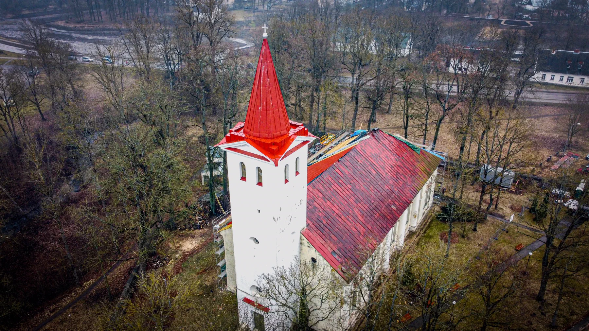
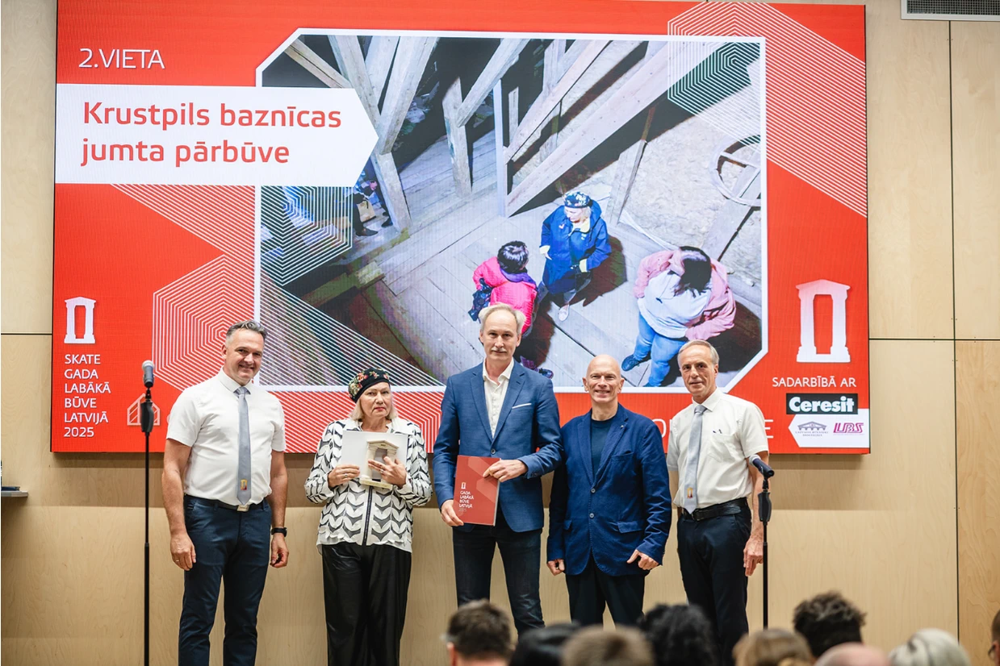

2. vieta · Gada labākā būve Latvijā 2025
Krustpils baznīcas jumta pārbūve
Krustpils baznīcas jumta pārbūve ieguva 2. vietu skatē „Gada labākā būve Latvijā 2025”.

- Objekts
- Sakrāla ēka · Jēkabpils
- Darbi
- Jumta seguma nomaiņa un konstrukciju atjaunošana
- Iesaiste
- Atbildīgais būvuzraugs un projekta mezglu konsultants